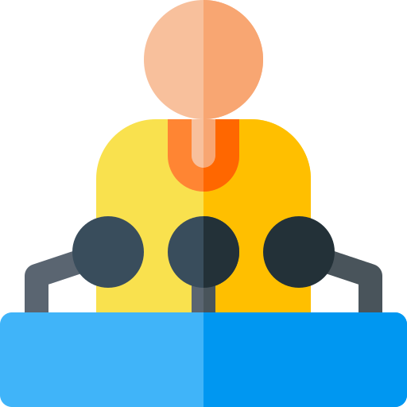

I am a highly motivated, bilingual, goal-driven individual with a keen interest into software development, studying a foundation degree in software engineering.
My Skills.
Technologies
Programming Languages - Java, C#, JavaScript
Design Technology - Java Swing, aspx, HTML, CSS
Databases - Microsoft SQL Server, Microsoft Access
Interpersonal Skills
Bilingual - Fluent in Polish and English.
Time Management and Leadership - Excellent team worker demonstrated by my most recent group project using Java. As team leader, I made sure that as a team we met all our goals by setting achievable deliverables to each
team member and helping in all parts of the project.
Communication and Customer Service - Have been working in a customer service role for 2 years, engaging with customers from diverse background on a daily basis.

Personal Skills
Organisational Skills – As president of computing club, I am responsible for gathering funding and organising any events.
Time Management - I have a very busy schedule outside of school, including: part-time job, Jiu-Jitsu, gym, computing club and various technology events like the BelFOSS conference earlier this year or the upcoming AI
Datathon at Queen’s.
Motivation and Work Ethic - Managing to maintain this schedule while achieving excellent grades and attendance during my degree demonstrates a great work ethic and motivation within my field of study.